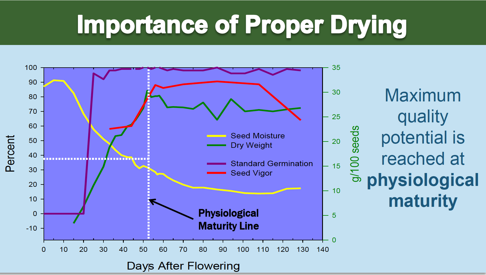
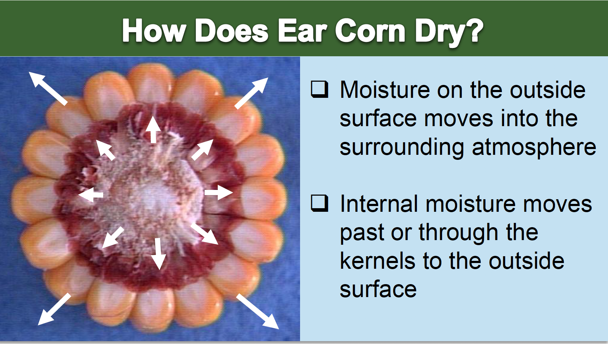
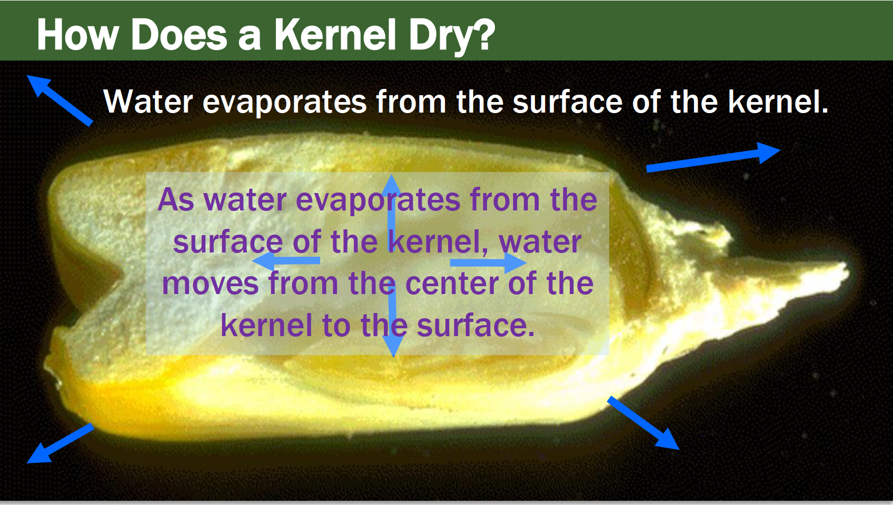

Introduction & Importance of Proper Drying
Why mechanical drying is essential for preserving seed quality from harvest through storage.

What We Want: High Quality Seed
The ultimate goal of seed corn drying is to produce and preserve high quality seed with:
- Good warm germination
- Good seed vigor
- Resulting in good field emergence
Maximum Quality Potential
Maximum quality potential is reached at physiological maturity. From that point forward, quality must be preserved through careful handling at every stage.
How Quality Is Preserved
Seed quality needs to be preserved through four critical practices:
- Harvesting as close as possible to physiological maturity
- Good drying practices
- Good conditioning practices
- Good storage practices
Mechanical drying is necessary to preserve seed quality. Without it, seed deteriorates rapidly after physiological maturity.
Knowledge Check
Q 1 of 25Knowledge Check
Q 2 of 25How Does Ear Corn & Kernels Dry?
Understanding moisture movement from the center of the kernel to the surrounding atmosphere.
Moisture Movement in Ear Corn
- Moisture on the outside surface moves into the surrounding atmosphere
- Internal moisture moves past or through the kernels to the outside surface

How a Kernel Dries

Water evaporates from the surface of the kernel. As this happens, water moves from the center of the kernel to the surface.
Seeds Are Hygroscopic
- After physiological maturity, seed moisture is a function of the surrounding air
- Seed moisture will be determined by relative humidity and temperature of the air
- Equilibrium seed moisture content is a function of water vapor pressure
- These principles are used to dry seed in the dryers
Seeds naturally absorb or release moisture based on surrounding air conditions. This property is the entire basis for mechanical seed drying — by controlling the air, we control seed moisture.